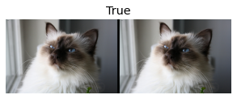
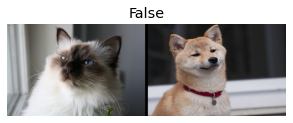
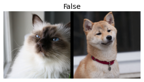
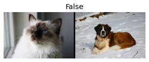

Notes on fastai Book Ch. 11
- Going Deeper into fastai’s Layered API
- TfmdLists and Datasets: Transformed Collections
- Applying the Mid-Level Data API: SiamesePair
- References
import fastbook
fastbook.setup_book()#hide
from fastbook import *
from IPython.display import display,HTMLimport inspect
def print_source(obj):
for line in inspect.getsource(obj).split("\n"):
print(line)Going Deeper into fastai’s Layered API
- fastai is built on a layered API
from fastai.text.all import *print_source(TextDataLoaders.from_folder) @classmethod
@delegates(DataLoaders.from_dblock)
def from_folder(cls, path, train='train', valid='valid', valid_pct=None, seed=None, vocab=None, text_vocab=None, is_lm=False,
tok_tfm=None, seq_len=72, backwards=False, **kwargs):
"Create from imagenet style dataset in `path` with `train` and `valid` subfolders (or provide `valid_pct`)"
splitter = GrandparentSplitter(train_name=train, valid_name=valid) if valid_pct is None else RandomSplitter(valid_pct, seed=seed)
blocks = [TextBlock.from_folder(path, text_vocab, is_lm, seq_len, backwards, tok=tok_tfm)]
if not is_lm: blocks.append(CategoryBlock(vocab=vocab))
get_items = partial(get_text_files, folders=[train,valid]) if valid_pct is None else get_text_files
dblock = DataBlock(blocks=blocks,
get_items=get_items,
splitter=splitter,
get_y=None if is_lm else parent_label)
return cls.from_dblock(dblock, path, path=path, seq_len=seq_len, **kwargs)dls = TextDataLoaders.from_folder(untar_data(URLs.IMDB), valid='test')Note: The above from_folder method expects the dataset to be arranged in a certain way.
path = untar_data(URLs.IMDB)
pathPath('/home/innom-dt/.fastai/data/imdb')Mide-Level API
- contains functionality for creating DataLoaders
- Has a callback system which allows us to customize the training loop, along with the general optimizer
Data Block API
- Allows us to define custom approaches for loading data from datasets
print_source(DataBlock)@docs
@funcs_kwargs
class DataBlock():
"Generic container to quickly build `Datasets` and `DataLoaders`"
get_x=get_items=splitter=get_y = None
blocks,dl_type = (TransformBlock,TransformBlock),TfmdDL
_methods = 'get_items splitter get_y get_x'.split()
_msg = "If you wanted to compose several transforms in your getter don't forget to wrap them in a `Pipeline`."
def __init__(self, blocks=None, dl_type=None, getters=None, n_inp=None, item_tfms=None, batch_tfms=None, **kwargs):
blocks = L(self.blocks if blocks is None else blocks)
blocks = L(b() if callable(b) else b for b in blocks)
self.type_tfms = blocks.attrgot('type_tfms', L())
self.default_item_tfms = _merge_tfms(*blocks.attrgot('item_tfms', L()))
self.default_batch_tfms = _merge_tfms(*blocks.attrgot('batch_tfms', L()))
for b in blocks:
if getattr(b, 'dl_type', None) is not None: self.dl_type = b.dl_type
if dl_type is not None: self.dl_type = dl_type
self.dataloaders = delegates(self.dl_type.__init__)(self.dataloaders)
self.dls_kwargs = merge(*blocks.attrgot('dls_kwargs', {}))
self.n_inp = ifnone(n_inp, max(1, len(blocks)-1))
self.getters = ifnone(getters, [noop]*len(self.type_tfms))
if self.get_x:
if len(L(self.get_x)) != self.n_inp:
raise ValueError(f'get_x contains {len(L(self.get_x))} functions, but must contain {self.n_inp} (one for each input)\n{self._msg}')
self.getters[:self.n_inp] = L(self.get_x)
if self.get_y:
n_targs = len(self.getters) - self.n_inp
if len(L(self.get_y)) != n_targs:
raise ValueError(f'get_y contains {len(L(self.get_y))} functions, but must contain {n_targs} (one for each target)\n{self._msg}')
self.getters[self.n_inp:] = L(self.get_y)
if kwargs: raise TypeError(f'invalid keyword arguments: {", ".join(kwargs.keys())}')
self.new(item_tfms, batch_tfms)
def _combine_type_tfms(self): return L([self.getters, self.type_tfms]).map_zip(
lambda g,tt: (g.fs if isinstance(g, Pipeline) else L(g)) + tt)
def new(self, item_tfms=None, batch_tfms=None):
self.item_tfms = _merge_tfms(self.default_item_tfms, item_tfms)
self.batch_tfms = _merge_tfms(self.default_batch_tfms, batch_tfms)
return self
@classmethod
def from_columns(cls, blocks=None, getters=None, get_items=None, **kwargs):
if getters is None: getters = L(ItemGetter(i) for i in range(2 if blocks is None else len(L(blocks))))
get_items = _zip if get_items is None else compose(get_items, _zip)
return cls(blocks=blocks, getters=getters, get_items=get_items, **kwargs)
def datasets(self, source, verbose=False):
self.source = source ; pv(f"Collecting items from {source}", verbose)
items = (self.get_items or noop)(source) ; pv(f"Found {len(items)} items", verbose)
splits = (self.splitter or RandomSplitter())(items)
pv(f"{len(splits)} datasets of sizes {','.join([str(len(s)) for s in splits])}", verbose)
return Datasets(items, tfms=self._combine_type_tfms(), splits=splits, dl_type=self.dl_type, n_inp=self.n_inp, verbose=verbose)
def dataloaders(self, source, path='.', verbose=False, **kwargs):
dsets = self.datasets(source, verbose=verbose)
kwargs = {**self.dls_kwargs, **kwargs, 'verbose': verbose}
return dsets.dataloaders(path=path, after_item=self.item_tfms, after_batch=self.batch_tfms, **kwargs)
_docs = dict(new="Create a new `DataBlock` with other `item_tfms` and `batch_tfms`",
datasets="Create a `Datasets` object from `source`",
dataloaders="Create a `DataLoaders` object from `source`")print_source(TextBlock.from_folder) @classmethod
@delegates(Tokenizer.from_folder, keep=True)
def from_folder(cls, path, vocab=None, is_lm=False, seq_len=72, backwards=False, min_freq=3, max_vocab=60000, **kwargs):
"Build a `TextBlock` from a `path`"
return cls(Tokenizer.from_folder(path, **kwargs), vocab=vocab, is_lm=is_lm, seq_len=seq_len,
backwards=backwards, min_freq=min_freq, max_vocab=max_vocab)print_source(CategoryBlock)def CategoryBlock(vocab=None, sort=True, add_na=False):
"`TransformBlock` for single-label categorical targets"
return TransformBlock(type_tfms=Categorize(vocab=vocab, sort=sort, add_na=add_na))dls = DataBlock(
blocks=(TextBlock.from_folder(path),CategoryBlock),
get_y = parent_label,
get_items=partial(get_text_files, folders=['train', 'test']),
splitter=GrandparentSplitter(valid_name='test')
).dataloaders(path)Transforms
- A Transform object implements any encoding, setup steps for an inner state, and decoding steps required for a type of data
- Not every type of Transform needs to implement setup steps
- Data augmentation transforms do not need a decode method
- Transforms always get applied over tuples
- data is almost always in a tuple of (input, target)
Transformfastcore.transform.Transformprint_source(Transform)class Transform(metaclass=_TfmMeta):
"Delegates (`__call__`,`decode`,`setup`) to (<code>encodes</code>,<code>decodes</code>,<code>setups</code>) if `split_idx` matches"
split_idx,init_enc,order,train_setup = None,None,0,None
def __init__(self, enc=None, dec=None, split_idx=None, order=None):
self.split_idx = ifnone(split_idx, self.split_idx)
if order is not None: self.order=order
self.init_enc = enc or dec
if not self.init_enc: return
self.encodes,self.decodes,self.setups = TypeDispatch(),TypeDispatch(),TypeDispatch()
if enc:
self.encodes.add(enc)
self.order = getattr(enc,'order',self.order)
if len(type_hints(enc)) > 0: self.input_types = first(type_hints(enc).values())
self._name = _get_name(enc)
if dec: self.decodes.add(dec)
@property
def name(self): return getattr(self, '_name', _get_name(self))
def __call__(self, x, **kwargs): return self._call('encodes', x, **kwargs)
def decode (self, x, **kwargs): return self._call('decodes', x, **kwargs)
def __repr__(self): return f'{self.name}:\nencodes: {self.encodes}decodes: {self.decodes}'
def setup(self, items=None, train_setup=False):
train_setup = train_setup if self.train_setup is None else self.train_setup
return self.setups(getattr(items, 'train', items) if train_setup else items)
def _call(self, fn, x, split_idx=None, **kwargs):
if split_idx!=self.split_idx and self.split_idx is not None: return x
return self._do_call(getattr(self, fn), x, **kwargs)
def _do_call(self, f, x, **kwargs):
if not _is_tuple(x):
if f is None: return x
ret = f.returns(x) if hasattr(f,'returns') else None
return retain_type(f(x, **kwargs), x, ret)
res = tuple(self._do_call(f, x_, **kwargs) for x_ in x)
return retain_type(res, x)TypeDispatchfastcore.dispatch.TypeDispatchprint_source(TypeDispatch)class TypeDispatch:
"Dictionary-like object; `__getitem__` matches keys of types using `issubclass`"
def __init__(self, funcs=(), bases=()):
self.funcs,self.bases = _TypeDict(),L(bases).filter(is_not(None))
for o in L(funcs): self.add(o)
self.inst = None
self.owner = None
def add(self, f):
"Add type `t` and function `f`"
if isinstance(f, staticmethod): a0,a1 = _p2_anno(f.__func__)
else: a0,a1 = _p2_anno(f)
t = self.funcs.d.get(a0)
if t is None:
t = _TypeDict()
self.funcs.add(a0, t)
t.add(a1, f)
def first(self):
"Get first function in ordered dict of type:func."
return self.funcs.first().first()
def returns(self, x):
"Get the return type of annotation of `x`."
return anno_ret(self[type(x)])
def _attname(self,k): return getattr(k,'__name__',str(k))
def __repr__(self):
r = [f'({self._attname(k)},{self._attname(l)}) -> {getattr(v, "__name__", type(v).__name__)}'
for k in self.funcs.d for l,v in self.funcs[k].d.items()]
r = r + [o.__repr__() for o in self.bases]
return '\n'.join(r)
def __call__(self, *args, **kwargs):
ts = L(args).map(type)[:2]
f = self[tuple(ts)]
if not f: return args[0]
if isinstance(f, staticmethod): f = f.__func__
elif self.inst is not None: f = MethodType(f, self.inst)
elif self.owner is not None: f = MethodType(f, self.owner)
return f(*args, **kwargs)
def __get__(self, inst, owner):
self.inst = inst
self.owner = owner
return self
def __getitem__(self, k):
"Find first matching type that is a super-class of `k`"
k = L(k)
while len(k)<2: k.append(object)
r = self.funcs.all_matches(k[0])
for t in r:
o = t[k[1]]
if o is not None: return o
for base in self.bases:
res = base[k]
if res is not None: return res
return None# Get list of individual text files
files = get_text_files(path, folders = ['train', 'test'])
# Extract contents of text files
txts = L(o.open().read() for o in files[:2000])print_source(Tokenizer.from_folder) @classmethod
@delegates(tokenize_folder, keep=True)
def from_folder(cls, path, tok=None, rules=None, **kwargs):
path = Path(path)
if tok is None: tok = WordTokenizer()
output_dir = tokenize_folder(path, tok=tok, rules=rules, **kwargs)
res = cls(tok, counter=load_pickle(output_dir/fn_counter_pkl),
lengths=load_pickle(output_dir/fn_lengths_pkl), rules=rules, mode='folder')
res.path,res.output_dir = path,output_dir
return resprint_source(tokenize_folder)@delegates(_tokenize_files)
def tokenize_folder(path, extensions=None, folders=None, output_dir=None, skip_if_exists=True, **kwargs):
"Tokenize text files in `path` in parallel using `n_workers`"
path,extensions = Path(path),ifnone(extensions, ['.txt'])
files = get_files(path, extensions=extensions, recurse=True, folders=folders)
def _f(i,output_dir): return output_dir/files[i].relative_to(path)
return _tokenize_files(_f, files, path, skip_if_exists=skip_if_exists, **kwargs)tok = Tokenizer.from_folder(path)
tok.setup(txts)
toks = txts.map(tok)
toks[0](#177) ['xxbos','xxmaj','this','conglomeration','fails','so','miserably','on','every','level'...]# Initialize the numericalizer
num = Numericalize()
# Set up vocab
num.setup(toks)
# Get number for tokens
nums = toks.map(num)
nums[0][:10]TensorText([ 2, 8, 20, 0, 615, 49, 1689, 35, 195, 599])# Decode numbers to tokens
nums_dec = num.decode(nums[0][:10]); nums_dec(#10) ['xxbos','xxmaj','this','xxunk','fails','so','miserably','on','every','level']# Decode numericalized list of tokens to a single string of words
tok.decode(nums_dec)'xxbos xxmaj this xxunk fails so miserably on every level'Note: The default WordTokenizer cannot decode special tokens back to the original text.
# Tokenize a single tuple of (input, target)
tok((txts[0], txts[1]))((#177) ['xxbos','xxmaj','this','conglomeration','fails','so','miserably','on','every','level'...],
(#562) ['xxbos','xxmaj','jacqueline','xxmaj','susann','wrote','several','novels','all','involving'...])Writing Your Own Transform
- easiest way is to write a function
- specify a type in the function signature so the transform is only applied to the target data types
- Transforms that require either setup or decode, need to be implemented as a subclass of Transform
# Simple transform function that adds 1 to an int
def f(x:int): return x+1
# Initialize a Transform object with the transform function
tfm = Transform(f)
# Try to apply the transform to an in and a float
tfm(2),tfm(2.0)(3, 2.0)Python Decorators
- special syntax for passing a function to another function (or something like a function)
- used by prepending a callable with a
@and placing it before a function definition - PEP 318 – Decorators for Functions and Methods
- Primer on Python Decorators
Python typing.Callable
- Documentation
- Something that can be called
- a function or something like a function
@Transform
def f(x:int): return x+1
f(2),f(2.0)(3, 2.0)class NormalizeMean(Transform):
# Calculate the mean for the dataset and maintain it as inner state
def setups(self, items): self.mean = sum(items)/len(items)
# Encode items by substracting the mean
def encodes(self, x): return x-self.mean
# Decode items by adding the mean
def decodes(self, x): return x+self.mean# Instantiate the custom transform
tfm = NormalizeMean()
# Initialize the inner state for the transform
# (i.e. calculate the mean for the dataset)
tfm.setup([1,2,3,4,5])
start = 2
# Apply transform to the value 2
y = tfm(start)
z = tfm.decode(y)
tfm.mean,y,z(3.0, -1.0, 2.0)Pipeline
- compose several transforms together
- pass in a list of Transforms
- calls the Transforms in sequential order
- Need to use a TfmdLists to properly setup a pipeline of transforms on some data.
Pipelinefastcore.transform.Pipelineprint_source(Pipeline)class Pipeline:
"A pipeline of composed (for encode/decode) transforms, setup with types"
def __init__(self, funcs=None, split_idx=None):
self.split_idx,self.default = split_idx,None
if funcs is None: funcs = []
if isinstance(funcs, Pipeline): self.fs = funcs.fs
else:
if isinstance(funcs, Transform): funcs = [funcs]
self.fs = L(ifnone(funcs,[noop])).map(mk_transform).sorted(key='order')
for f in self.fs:
name = camel2snake(type(f).__name__)
a = getattr(self,name,None)
if a is not None: f = L(a)+f
setattr(self, name, f)
def setup(self, items=None, train_setup=False):
tfms = self.fs[:]
self.fs.clear()
for t in tfms: self.add(t,items, train_setup)
def add(self,ts, items=None, train_setup=False):
if not is_listy(ts): ts=[ts]
for t in ts: t.setup(items, train_setup)
self.fs+=ts
self.fs = self.fs.sorted(key='order')
def __call__(self, o): return compose_tfms(o, tfms=self.fs, split_idx=self.split_idx)
def __repr__(self): return f"Pipeline: {' -> '.join([f.name for f in self.fs if f.name != 'noop'])}"
def __getitem__(self,i): return self.fs[i]
def __setstate__(self,data): self.__dict__.update(data)
def __getattr__(self,k): return gather_attrs(self, k, 'fs')
def __dir__(self): return super().__dir__() + gather_attr_names(self, 'fs')
def decode (self, o, full=True):
if full: return compose_tfms(o, tfms=self.fs, is_enc=False, reverse=True, split_idx=self.split_idx)
#Not full means we decode up to the point the item knows how to show itself.
for f in reversed(self.fs):
if self._is_showable(o): return o
o = f.decode(o, split_idx=self.split_idx)
return o
def show(self, o, ctx=None, **kwargs):
o = self.decode(o, full=False)
o1 = (o,) if not _is_tuple(o) else o
if hasattr(o, 'show'): ctx = o.show(ctx=ctx, **kwargs)
else:
for o_ in o1:
if hasattr(o_, 'show'): ctx = o_.show(ctx=ctx, **kwargs)
return ctx
def _is_showable(self, o):
if hasattr(o, 'show'): return True
if _is_tuple(o): return all(hasattr(o_, 'show') for o_ in o)
return Falsecamel2snake<function fastcore.basics.camel2snake(name)>print_source(camel2snake)def camel2snake(name):
"Convert CamelCase to snake_case"
s1 = re.sub(_camel_re1, r'\1_\2', name)
return re.sub(_camel_re2, r'\1_\2', s1).lower()# Create a pipeline that first tokenizes and then numericalizes a text dataset
tfms = Pipeline([tok, num])
t = tfms(txts[0]); t[:20]TensorText([ 2, 8, 20, 0, 615, 49, 1689, 35, 195, 599, 21, 17, 16, 1088, 15, 1177, 65, 15, 145, 10])tfms.decode(t)[:100]'xxbos xxmaj this xxunk fails so miserably on every level that it is difficult to decide what to say 'TfmdLists and Datasets: Transformed Collections
- your data is usually a set of raw items to which you want to apply a succession of transformations
TfmdLists
- groups your pipeline with your raw items
- use when you have manually written a Transform that performs all your preprocessing at once, which turns raw items into a tuple with inputs and targets
- pass in items and a list of Transforms
- automatically calls the setup method of each Transform in order when initialized
- can index into the TfmdLists to get the result of the Pipeline on any raw element
- knows how to properly decode transformed items
- can handle a training and validation set
- can directly convert a TfmdLists to a DataLoaders object with the dataloaders method (inherited from FilteredBase)
Note: You will typically have two or more parallel pipelines of transforms: * one for processing your raw items into inputs * one to process your raw items into targets
TfmdListsfastai.data.core.TfmdListsprint_source(TfmdLists)class TfmdLists(FilteredBase, L, GetAttr):
"A `Pipeline` of `tfms` applied to a collection of `items`"
_default='tfms'
def __init__(self, items, tfms, use_list=None, do_setup=True, split_idx=None, train_setup=True,
splits=None, types=None, verbose=False, dl_type=None):
super().__init__(items, use_list=use_list)
if dl_type is not None: self._dl_type = dl_type
self.splits = L([slice(None),[]] if splits is None else splits).map(mask2idxs)
if isinstance(tfms,TfmdLists): tfms = tfms.tfms
if isinstance(tfms,Pipeline): do_setup=False
self.tfms = Pipeline(tfms, split_idx=split_idx)
store_attr('types,split_idx')
if do_setup:
pv(f"Setting up {self.tfms}", verbose)
self.setup(train_setup=train_setup)
def _new(self, items, split_idx=None, **kwargs):
split_idx = ifnone(split_idx,self.split_idx)
return super()._new(items, tfms=self.tfms, do_setup=False, types=self.types, split_idx=split_idx, **kwargs)
def subset(self, i): return self._new(self._get(self.splits[i]), split_idx=i)
def _after_item(self, o): return self.tfms(o)
def __repr__(self): return f"{self.__class__.__name__}: {self.items}\ntfms - {self.tfms.fs}"
def __iter__(self): return (self[i] for i in range(len(self)))
def show(self, o, **kwargs): return self.tfms.show(o, **kwargs)
def decode(self, o, **kwargs): return self.tfms.decode(o, **kwargs)
def __call__(self, o, **kwargs): return self.tfms.__call__(o, **kwargs)
def overlapping_splits(self): return L(Counter(self.splits.concat()).values()).filter(gt(1))
def new_empty(self): return self._new([])
def setup(self, train_setup=True):
self.tfms.setup(self, train_setup)
if len(self) != 0:
x = super().__getitem__(0) if self.splits is None else super().__getitem__(self.splits[0])[0]
self.types = []
for f in self.tfms.fs:
self.types.append(getattr(f, 'input_types', type(x)))
x = f(x)
self.types.append(type(x))
types = L(t if is_listy(t) else [t] for t in self.types).concat().unique()
self.pretty_types = '\n'.join([f' - {t}' for t in types])
def infer_idx(self, x):
# TODO: check if we really need this, or can simplify
idx = 0
for t in self.types:
if isinstance(x, t): break
idx += 1
types = L(t if is_listy(t) else [t] for t in self.types).concat().unique()
pretty_types = '\n'.join([f' - {t}' for t in types])
assert idx < len(self.types), f"Expected an input of type in \n{pretty_types}\n but got {type(x)}"
return idx
def infer(self, x):
return compose_tfms(x, tfms=self.tfms.fs[self.infer_idx(x):], split_idx=self.split_idx)
def __getitem__(self, idx):
res = super().__getitem__(idx)
if self._after_item is None: return res
return self._after_item(res) if is_indexer(idx) else res.map(self._after_item)print_source(FilteredBase)class FilteredBase:
"Base class for lists with subsets"
_dl_type,_dbunch_type = TfmdDL,DataLoaders
def __init__(self, *args, dl_type=None, **kwargs):
if dl_type is not None: self._dl_type = dl_type
self.dataloaders = delegates(self._dl_type.__init__)(self.dataloaders)
super().__init__(*args, **kwargs)
@property
def n_subsets(self): return len(self.splits)
def _new(self, items, **kwargs): return super()._new(items, splits=self.splits, **kwargs)
def subset(self): raise NotImplemented
def dataloaders(self, bs=64, shuffle_train=None, shuffle=True, val_shuffle=False,n=None, path='.', dl_type=None, dl_kwargs=None,
device=None,drop_last=None,val_bs=None, **kwargs):
if shuffle_train is not None:
shuffle=shuffle_train
warnings.warn('`shuffle_train` is deprecated. Use `shuffle` instead.',DeprecationWarning)
if device is None: device=default_device()
if dl_kwargs is None: dl_kwargs = [{}] * self.n_subsets
if dl_type is None: dl_type = self._dl_type
if drop_last is None: drop_last = shuffle
val_kwargs={k[4:]:v for k,v in kwargs.items() if k.startswith('val_')}
def_kwargs = {'bs':bs,'shuffle':shuffle,'drop_last':drop_last,'n':n,'device':device}
dl = dl_type(self.subset(0), **merge(kwargs,def_kwargs, dl_kwargs[0]))
def_kwargs = {'bs':bs if val_bs is None else val_bs,'shuffle':val_shuffle,'n':None,'drop_last':False}
dls = [dl] + [dl.new(self.subset(i), **merge(kwargs,def_kwargs,val_kwargs,dl_kwargs[i]))
for i in range(1, self.n_subsets)]
return self._dbunch_type(*dls, path=path, device=device)tls = TfmdLists(files, [Tokenizer.from_folder(path), Numericalize])t = tls[0]; t[:20]TensorText([ 2, 8, 20, 33649, 1033, 52, 3265, 35, 193, 649, 21, 17, 16, 890, 15, 1156, 65, 15, 159, 10])tls.decode(t)[:100]'xxbos xxmaj this conglomeration fails so miserably on every level that it is difficult to decide wha'Note: The sentence is properly decoded including the word “conglomeration”.
tls.show(t)xxbos xxmaj this conglomeration fails so miserably on every level that it is difficult to decide what to say . xxmaj it does n't merit one line , much less ten , but to adhere to the rules of imdb , here goes and i probably wo n't succeed the first time around and have to type some more to make up for this submission to be accepted . xxup lol
xxmaj if i had seen this schlock during the ' 70s while i was going through my mushroom phase , i would have still considered it unimaginative and shallow . xxmaj the most exciting shot for me was the long shot when the elevator door opened and xxunk was on the edge of my seat .
xxmaj one person on here wrote that he had met the creator of this mess , as if that were a red letter day in his life . xxmaj one can only pray that something far more exciting occurs in that posters xxunk a grip , amigo .# Define how many files to keep in the training set
cut = int(len(files)*0.8)
cut40000# Split the files into a training and validation set
splits = [list(range(cut)), list(range(cut,len(files)))]
len(splits[0]), len(splits[1])(40000, 10000)# Initialize a TfmdLists with indices for a training and validation set
tls = TfmdLists(files, [Tokenizer.from_folder(path), Numericalize],
splits=splits)tls.valid[0][:20]TensorText([ 2, 8, 9, 107, 77, 19, 87, 9, 1836, 14, 1438, 15, 86, 20, 45, 31, 1524, 393, 25, 164])parent_label<function fastai.data.transforms.parent_label(o)>print_source(parent_label)def parent_label(o):
"Label `item` with the parent folder name."
return Path(o).parent.name# Label files based on the parent folder name
lbls = files.map(parent_label)
lbls(#50000) ['neg','neg','neg','neg','neg','neg','neg','neg','neg','neg'...]Categorizefastai.data.transforms.Categorizeprint_source(Categorize)class Categorize(DisplayedTransform):
"Reversible transform of category string to `vocab` id"
loss_func,order=CrossEntropyLossFlat(),1
def __init__(self, vocab=None, sort=True, add_na=False):
if vocab is not None: vocab = CategoryMap(vocab, sort=sort, add_na=add_na)
store_attr()
def setups(self, dsets):
if self.vocab is None and dsets is not None: self.vocab = CategoryMap(dsets, sort=self.sort, add_na=self.add_na)
self.c = len(self.vocab)
def encodes(self, o):
try:
return TensorCategory(self.vocab.o2i[o])
except KeyError as e:
raise KeyError(f"Label '{o}' was not included in the training dataset") from e
def decodes(self, o): return Category (self.vocab [o])# Grab all unique items and build a vocab
cat = Categorize()
cat.setup(lbls)
cat.vocab, cat(lbls[0])# Create a TfmdLists that labels items using the parent folder name and build a vocab
tls_y = TfmdLists(files, [parent_label, Categorize()])
tls_y[0]TensorCategory(0)Datasets
- applies two (or more) pipelines in parallel to the same raw object and build a tuple with the result
- automatically performs the setup steps
- can index into a Datasets to get a tuple with the results of each pipeline
- can pass along a splits value for a training and validation split
- can decode any processed tuple
- can directly convert a Datasets to a DataLoaders object with the dataloaders method (inherited from FilteredBase)
Datasetsfastai.data.core.Datasetsprint_source(Datasets)@docs
@delegates(TfmdLists)
class Datasets(FilteredBase):
"A dataset that creates a tuple from each `tfms`"
def __init__(self, items=None, tfms=None, tls=None, n_inp=None, dl_type=None, **kwargs):
super().__init__(dl_type=dl_type)
self.tls = L(tls if tls else [TfmdLists(items, t, **kwargs) for t in L(ifnone(tfms,[None]))])
self.n_inp = ifnone(n_inp, max(1, len(self.tls)-1))
def __getitem__(self, it):
res = tuple([tl[it] for tl in self.tls])
return res if is_indexer(it) else list(zip(*res))
def __getattr__(self,k): return gather_attrs(self, k, 'tls')
def __dir__(self): return super().__dir__() + gather_attr_names(self, 'tls')
def __len__(self): return len(self.tls[0])
def __iter__(self): return (self[i] for i in range(len(self)))
def __repr__(self): return coll_repr(self)
def decode(self, o, full=True): return tuple(tl.decode(o_, full=full) for o_,tl in zip(o,tuplify(self.tls, match=o)))
def subset(self, i): return type(self)(tls=L(tl.subset(i) for tl in self.tls), n_inp=self.n_inp)
def _new(self, items, *args, **kwargs): return super()._new(items, tfms=self.tfms, do_setup=False, **kwargs)
def overlapping_splits(self): return self.tls[0].overlapping_splits()
def new_empty(self): return type(self)(tls=[tl.new_empty() for tl in self.tls], n_inp=self.n_inp)
@property
def splits(self): return self.tls[0].splits
@property
def split_idx(self): return self.tls[0].tfms.split_idx
@property
def items(self): return self.tls[0].items
@items.setter
def items(self, v):
for tl in self.tls: tl.items = v
def show(self, o, ctx=None, **kwargs):
for o_,tl in zip(o,self.tls): ctx = tl.show(o_, ctx=ctx, **kwargs)
return ctx
@contextmanager
def set_split_idx(self, i):
old_split_idx = self.split_idx
for tl in self.tls: tl.tfms.split_idx = i
try: yield self
finally:
for tl in self.tls: tl.tfms.split_idx = old_split_idx
_docs=dict(
decode="Compose `decode` of all `tuple_tfms` then all `tfms` on `i`",
show="Show item `o` in `ctx`",
dataloaders="Get a `DataLoaders`",
overlapping_splits="All splits that are in more than one split",
subset="New `Datasets` that only includes subset `i`",
new_empty="Create a new empty version of the `self`, keeping only the transforms",
set_split_idx="Contextmanager to use the same `Datasets` with another `split_idx`"
)# Tokenize and numericalize inputs
x_tfms = [Tokenizer.from_folder(path), Numericalize]
# Label and categorize targets
y_tfms = [parent_label, Categorize()]
# Initialize a Datasets
dsets = Datasets(files, [x_tfms, y_tfms])
x,y = dsets[0]
x[:20],y(TensorText([ 2, 8, 20, 33649, 1033, 52, 3265, 35, 193, 649, 21, 17, 16, 890, 15, 1156, 65, 15, 159, 10]),
TensorCategory(0))# Tokenize and numericalize inputs
x_tfms = [Tokenizer.from_folder(path), Numericalize]
# Label and categorize targets
y_tfms = [parent_label, Categorize()]
# Initialize a Datasets with a splits
dsets = Datasets(files, [x_tfms, y_tfms], splits=splits)
x,y = dsets.valid[0]
x[:20],y(TensorText([ 2, 8, 9, 107, 77, 19, 87, 9, 1836, 14, 1438, 15, 86, 20, 45, 31, 1524, 393, 25, 164]),
TensorCategory(1))t = dsets.valid[0]
dsets.decode(t)('xxbos xxmaj the first time i had the window of opportunity to see this all but forgotten classic was back in the early xxunk , at one of our art houses as a revival . xxmaj as i watched this fever dream of an exercise in 1930 \'s sexuality , i thought xxup yowza ! xxmaj they got away with murder in xxmaj europe back in the day . xxmaj unfortunately , this film was heavily cut in it \'s original xxup u.s . release by the blue nosed xxmaj hayes xxmaj office ( the staunch government censorship board , started by the " holier than thou " xxmaj bible thumper , xxmaj will xxmaj hayes … a former xxmaj post xxmaj office official , if you can believe xxunk to it \'s overall theme of human sexuality ( heaven \'s forbid humans actually had sex in the 1930 \'s ) . xxmaj the plot of xxmaj ecstasy concerns a young woman ( played by xxmaj hedy xxmaj xxunk marries a much older man , and later regrets it . xxmaj she ( xxunk a handsome younger man & has an affair with him , resulting in a divorce from previous husband ( another no no in xxmaj hollywood movies back then xxrep 3 - xxmaj divorce ! ) . xxmaj despite the fact that the film was produced in 1933 , it was probably the director \'s first time working in the sound format ( i.e. the film seems to possess techniques that were used mostly in silent films xxrep 3 - i.e. 1920 \'s expressionism \'s ) . xxmaj it \'s still worth searching out for a window into early xxmaj european talking pictures , along with xxmaj luis xxmaj bunuels l\'age xxmaj dor ( xxunk xxmaj karl xxmaj gustav xxmaj dryer \'s \' vampyre \' ( 1931 ) . xxmaj not rated , but contains that infamous nude swimming scene & some thinly veiled sexual references , which would fare little more than a xxup pg-13 by today \'s standards ( but would have easily landed the dreaded \' xxunk in the xxunk , if it existed then )',
'pos')print(type(pad_input))
pad_input<class 'fastai.text.data.Pad_Input'>Pad_Input:
encodes: (object,object) -> encodes
decodes: (TensorText,object) -> decodesprint_source(Pad_Input)class Pad_Input(ItemTransform):
def encodes(self,samples, pad_idx=1, pad_fields=0, pad_first=False, backwards=False):
"Function that collect `samples` and adds padding"
self.pad_idx = pad_idx
pad_fields = L(pad_fields)
max_len_l = pad_fields.map(lambda f: max([len(s[f]) for s in samples]))
if backwards: pad_first = not pad_first
def _f(field_idx, x):
if field_idx not in pad_fields: return x
idx = pad_fields.items.index(field_idx) #TODO: remove items if L.index is fixed
sl = slice(-len(x), sys.maxsize) if pad_first else slice(0, len(x))
pad = x.new_zeros(max_len_l[idx]-x.shape[0])+pad_idx
x1 = torch.cat([pad, x] if pad_first else [x, pad])
if backwards: x1 = x1.flip(0)
return retain_type(x1, x)
return [tuple(map(lambda idxx: _f(*idxx), enumerate(s))) for s in samples]
def decodes(self, o:TensorText):
pad_idx = self.pad_idx if hasattr(self,'pad_idx') else 1
return o[o != pad_idx]DataLoader
- fastai’s DataLoader expands on the PyTorch DataLoader class
- responsible for collating the items from a dataset into batches
after_item: * applied on each item after grabbing it inside the dataset * equivalent of item_tfms in DataBlock
before_batch: * applied on the list of items before they are collated. * ideal place to pad items ot the same size
after_batch: * applied on the batch as a whole after its construction * equivalent of batch_tfms in DataBlock
DataLoaderfastai.data.load.DataLoaderprint_source(DataLoader)@funcs_kwargs
class DataLoader(GetAttr):
_noop_methods = 'wif before_iter after_item before_batch after_batch after_iter'.split()
for o in _noop_methods: exec(f"def {o}(self, x=None, *args, **kwargs): return x")
_methods = _noop_methods + 'create_batches create_item create_batch retain \
get_idxs sample shuffle_fn do_batch create_batch'.split()
_default = 'dataset'
def __init__(self, dataset=None, bs=None, num_workers=0, pin_memory=False, timeout=0, batch_size=None,
shuffle=False, drop_last=False, indexed=None, n=None, device=None, persistent_workers=False, **kwargs):
if batch_size is not None: bs = batch_size # PyTorch compatibility
assert not (bs is None and drop_last)
if indexed is None: indexed = (hasattr(dataset,'__getitem__')
and not isinstance(dataset, IterableDataset))
if not indexed and shuffle: raise ValueError("Can only shuffle an indexed dataset (not an iterable one).")
if n is None:
try: n = len(dataset)
except TypeError: pass
store_attr('dataset,bs,shuffle,drop_last,indexed,n,pin_memory,timeout,device')
self.rng,self.num_workers,self.offs = random.Random(random.randint(0,2**32-1)),1,0
if sys.platform == "win32" and IN_NOTEBOOK and num_workers > 0:
print("Due to IPython and Windows limitation, python multiprocessing isn't available now.")
print("So `number_workers` is changed to 0 to avoid getting stuck")
num_workers = 0
self.fake_l = _FakeLoader(self, pin_memory, num_workers, timeout, persistent_workers=persistent_workers)
def __len__(self):
if self.n is None: raise TypeError
if self.bs is None: return self.n
return self.n//self.bs + (0 if self.drop_last or self.n%self.bs==0 else 1)
def get_idxs(self):
idxs = Inf.count if self.indexed else Inf.nones
if self.n is not None: idxs = list(itertools.islice(idxs, self.n))
if self.shuffle: idxs = self.shuffle_fn(idxs)
return idxs
def sample(self):
return (b for i,b in enumerate(self.__idxs) if i//(self.bs or 1)%self.num_workers==self.offs)
def __iter__(self):
self.randomize()
self.before_iter()
self.__idxs=self.get_idxs() # called in context of main process (not workers/subprocesses)
for b in _loaders[self.fake_l.num_workers==0](self.fake_l):
if self.device is not None: b = to_device(b, self.device)
yield self.after_batch(b)
self.after_iter()
if hasattr(self, 'it'): del(self.it)
def create_batches(self, samps):
if self.dataset is not None: self.it = iter(self.dataset)
res = filter(lambda o:o is not None, map(self.do_item, samps))
yield from map(self.do_batch, self.chunkify(res))
def new(self, dataset=None, cls=None, **kwargs):
if dataset is None: dataset = self.dataset
if cls is None: cls = type(self)
cur_kwargs = dict(dataset=dataset, num_workers=self.fake_l.num_workers, pin_memory=self.pin_memory, timeout=self.timeout,
bs=self.bs, shuffle=self.shuffle, drop_last=self.drop_last, indexed=self.indexed, device=self.device)
for n in self._methods:
o = getattr(self, n)
if not isinstance(o, MethodType): cur_kwargs[n] = o
return cls(**merge(cur_kwargs, kwargs))
@property
def prebatched(self): return self.bs is None
def do_item(self, s):
try: return self.after_item(self.create_item(s))
except SkipItemException: return None
def chunkify(self, b): return b if self.prebatched else chunked(b, self.bs, self.drop_last)
def shuffle_fn(self, idxs): return self.rng.sample(idxs, len(idxs))
def randomize(self): self.rng = random.Random(self.rng.randint(0,2**32-1))
def retain(self, res, b): return retain_types(res, b[0] if is_listy(b) else b)
def create_item(self, s):
if self.indexed: return self.dataset[s or 0]
elif s is None: return next(self.it)
else: raise IndexError("Cannot index an iterable dataset numerically - must use `None`.")
def create_batch(self, b): return (fa_collate,fa_convert)[self.prebatched](b)
def do_batch(self, b): return self.retain(self.create_batch(self.before_batch(b)), b)
def to(self, device): self.device = device
def one_batch(self):
if self.n is not None and len(self)==0: raise ValueError(f'This DataLoader does not contain any batches')
with self.fake_l.no_multiproc(): res = first(self)
if hasattr(self, 'it'): delattr(self, 'it')
return resGetAttrfastcore.basics.GetAttrprint_source(GetAttr)class GetAttr:
"Inherit from this to have all attr accesses in `self._xtra` passed down to `self.default`"
_default='default'
def _component_attr_filter(self,k):
if k.startswith('__') or k in ('_xtra',self._default): return False
xtra = getattr(self,'_xtra',None)
return xtra is None or k in xtra
def _dir(self): return [k for k in dir(getattr(self,self._default)) if self._component_attr_filter(k)]
def __getattr__(self,k):
if self._component_attr_filter(k):
attr = getattr(self,self._default,None)
if attr is not None: return getattr(attr,k)
raise AttributeError(k)
def __dir__(self): return custom_dir(self,self._dir())
# def __getstate__(self): return self.__dict__
def __setstate__(self,data): self.__dict__.update(data)# Create a DataLoaders object from the Datasets object
# Add padding to input before batch
dls = dsets.dataloaders(bs=64, before_batch=pad_input)SortedDL
- constructs batches by putting samples of roughly the same lengths into batches
print_source(SortedDL)@delegates(TfmdDL)
class SortedDL(TfmdDL):
"A `DataLoader` that goes throught the item in the order given by `sort_func`"
def __init__(self, dataset, sort_func=None, res=None, **kwargs):
super().__init__(dataset, **kwargs)
self.sort_func = _default_sort if sort_func is None else sort_func
if res is None and self.sort_func == _default_sort: res = _get_lengths(dataset)
self.res = [self.sort_func(self.do_item(i)) for i in range_of(self.dataset)] if res is None else res
if len(self.res) > 0: self.idx_max = np.argmax(self.res)
def get_idxs(self):
idxs = super().get_idxs()
if self.shuffle: return idxs
return sorted(idxs, key=lambda i: self.res[i], reverse=True)
def shuffle_fn(self,idxs):
idxs = np.random.permutation(len(self.dataset))
idx_max = np.where(idxs==self.idx_max)[0][0]
idxs[0],idxs[idx_max] = idxs[idx_max],idxs[0]
sz = self.bs*50
chunks = [idxs[i:i+sz] for i in range(0, len(idxs), sz)]
chunks = [sorted(s, key=lambda i: self.res[i], reverse=True) for s in chunks]
sort_idx = np.concatenate(chunks)
sz = self.bs
batches = [sort_idx[i:i+sz] for i in range(0, len(sort_idx), sz)]
sort_idx = np.concatenate(np.random.permutation(batches[1:-1])) if len(batches) > 2 else np.array([],dtype=np.int)
sort_idx = np.concatenate((batches[0], sort_idx) if len(batches)==1 else (batches[0], sort_idx, batches[-1]))
return iter(sort_idx)
@delegates(TfmdDL.new)
def new(self, dataset=None, **kwargs):
if 'val_res' in kwargs and kwargs['val_res'] is not None: res = kwargs['val_res']
else: res = self.res if dataset is None else None
return super().new(dataset=dataset, res=res, **kwargs)# Full code necessary to prepare the data for text classification
tfms = [[Tokenizer.from_folder(path), Numericalize], [parent_label, Categorize]]
files = get_text_files(path, folders = ['train', 'test'])
splits = GrandparentSplitter(valid_name='test')(files)
dsets = Datasets(files, tfms, splits=splits)
dls = dsets.dataloaders(dl_type=SortedDL, before_batch=pad_input)Applying the Mid-Level Data API: SiamesePair
Siamese Model
- takes two images and has to determine whether they are of the same class
from fastai.vision.all import *path = untar_data(URLs.PETS)
pathPath('/home/innom-dt/.fastai/data/oxford-iiit-pet')files = get_image_files(path/"images")
files(#7390) [Path('/home/innom-dt/.fastai/data/oxford-iiit-pet/images/Birman_121.jpg'),Path('/home/innom-dt/.fastai/data/oxford-iiit-pet/images/shiba_inu_131.jpg'),Path('/home/innom-dt/.fastai/data/oxford-iiit-pet/images/Bombay_176.jpg'),Path('/home/innom-dt/.fastai/data/oxford-iiit-pet/images/Bengal_199.jpg'),Path('/home/innom-dt/.fastai/data/oxford-iiit-pet/images/beagle_41.jpg'),Path('/home/innom-dt/.fastai/data/oxford-iiit-pet/images/beagle_27.jpg'),Path('/home/innom-dt/.fastai/data/oxford-iiit-pet/images/great_pyrenees_181.jpg'),Path('/home/innom-dt/.fastai/data/oxford-iiit-pet/images/Bengal_100.jpg'),Path('/home/innom-dt/.fastai/data/oxford-iiit-pet/images/keeshond_124.jpg'),Path('/home/innom-dt/.fastai/data/oxford-iiit-pet/images/havanese_115.jpg')...]fastuplefastcore.basics.fastupleprint_source(fastuple)class fastuple(tuple):
"A `tuple` with elementwise ops and more friendly __init__ behavior"
def __new__(cls, x=None, *rest):
if x is None: x = ()
if not isinstance(x,tuple):
if len(rest): x = (x,)
else:
try: x = tuple(iter(x))
except TypeError: x = (x,)
return super().__new__(cls, x+rest if rest else x)
def _op(self,op,*args):
if not isinstance(self,fastuple): self = fastuple(self)
return type(self)(map(op,self,*map(cycle, args)))
def mul(self,*args):
"`*` is already defined in `tuple` for replicating, so use `mul` instead"
return fastuple._op(self, operator.mul,*args)
def add(self,*args):
"`+` is already defined in `tuple` for concat, so use `add` instead"
return fastuple._op(self, operator.add,*args)# Custom type to allow us to show siamese image pairs
# Tracks whether the two images belong to the same class
class SiameseImage(fastuple):
# Implement a custom show method to display the image pair
def show(self, ctx=None, **kwargs):
img1,img2,same_breed = self
# Convert to Tensors
if not isinstance(img1, Tensor):
# Resize images to the same size
if img2.size != img1.size: img2 = img2.resize(img1.size)
t1,t2 = tensor(img1),tensor(img2)
# Reorder color channels
t1,t2 = t1.permute(2,0,1),t2.permute(2,0,1)
else: t1,t2 = img1,img2
# Create a separating line between the two images
line = t1.new_zeros(t1.shape[0], t1.shape[1], 10)
return show_image(torch.cat([t1,line,t2], dim=2),
title=same_breed, ctx=ctx)img = PILImage.create(files[0])
# Create a siamese pair of the same image
s = SiameseImage(img, img, True)
s.show();
img1 = PILImage.create(files[1])
s1 = SiameseImage(img, img1, False)
s1.show();
Resizefastai.vision.augment.Resizeprint_source(Resize)@delegates()
class Resize(RandTransform):
split_idx,mode,mode_mask,order = None,Image.BILINEAR,Image.NEAREST,1
"Resize image to `size` using `method`"
def __init__(self, size, method=ResizeMethod.Crop, pad_mode=PadMode.Reflection,
resamples=(Image.BILINEAR, Image.NEAREST), **kwargs):
size = _process_sz(size)
store_attr()
super().__init__(**kwargs)
self.mode,self.mode_mask = resamples
def before_call(self, b, split_idx):
if self.method==ResizeMethod.Squish: return
self.pcts = (0.5,0.5) if split_idx else (random.random(),random.random())
def encodes(self, x:(Image.Image,TensorBBox,TensorPoint)):
orig_sz = _get_sz(x)
if self.method==ResizeMethod.Squish:
return x.crop_pad(orig_sz, fastuple(0,0), orig_sz=orig_sz, pad_mode=self.pad_mode,
resize_mode=self.mode_mask if isinstance(x,PILMask) else self.mode, resize_to=self.size)
w,h = orig_sz
op = (operator.lt,operator.gt)[self.method==ResizeMethod.Pad]
m = w/self.size[0] if op(w/self.size[0],h/self.size[1]) else h/self.size[1]
cp_sz = (int(m*self.size[0]),int(m*self.size[1]))
tl = fastuple(int(self.pcts[0]*(w-cp_sz[0])), int(self.pcts[1]*(h-cp_sz[1])))
return x.crop_pad(cp_sz, tl, orig_sz=orig_sz, pad_mode=self.pad_mode,
resize_mode=self.mode_mask if isinstance(x,PILMask) else self.mode, resize_to=self.size)s2 = Resize(224)(s1)
s2.show();
# Label images by filename
def label_func(fname):
return re.match(r'^(.*)_\d+.jpg$', fname.name).groups()[0]class SiameseTransform(Transform):
def __init__(self, files, label_func, splits):
# Generate list of unique labels
self.labels = files.map(label_func).unique()
# Create a dictionary to match labels to filenames
self.lbl2files = {l: L(f for f in files if label_func(f) == l)
for l in self.labels}
self.label_func = label_func
self.valid = {f: self._draw(f) for f in files[splits[1]]}
def encodes(self, f):
f2,t = self.valid.get(f, self._draw(f))
img1,img2 = PILImage.create(f),PILImage.create(f2)
# Create siamese image pair
return SiameseImage(img1, img2, t)
def _draw(self, f):
# 50/50 chance of generating a pair of the same class
same = random.random() < 0.5
cls = self.label_func(f)
if not same:
cls = random.choice(L(l for l in self.labels if l != cls))
return random.choice(self.lbl2files[cls]),sameprint_source(RandomSplitter)def RandomSplitter(valid_pct=0.2, seed=None):
"Create function that splits `items` between train/val with `valid_pct` randomly."
def _inner(o):
if seed is not None: torch.manual_seed(seed)
rand_idx = L(list(torch.randperm(len(o)).numpy()))
cut = int(valid_pct * len(o))
return rand_idx[cut:],rand_idx[:cut]
return _innerhelp(torch.randperm)Help on built-in function randperm:
randperm(...)
randperm(n, *, generator=None, out=None, dtype=torch.int64,layout=torch.strided, device=None, requires_grad=False, pin_memory=False) -> Tensor
Returns a random permutation of integers from ``0`` to ``n - 1``.
Args:
n (int): the upper bound (exclusive)
Keyword args:
generator (:class:`torch.Generator`, optional): a pseudorandom number generator for sampling
out (Tensor, optional): the output tensor.
dtype (:class:`torch.dtype`, optional): the desired data type of returned tensor.
Default: ``torch.int64``.
layout (:class:`torch.layout`, optional): the desired layout of returned Tensor.
Default: ``torch.strided``.
device (:class:`torch.device`, optional): the desired device of returned tensor.
Default: if ``None``, uses the current device for the default tensor type
(see :func:`torch.set_default_tensor_type`). :attr:`device` will be the CPU
for CPU tensor types and the current CUDA device for CUDA tensor types.
requires_grad (bool, optional): If autograd should record operations on the
returned tensor. Default: ``False``.
pin_memory (bool, optional): If set, returned tensor would be allocated in
the pinned memory. Works only for CPU tensors. Default: ``False``.
Example::
>>> torch.randperm(4)
tensor([2, 1, 0, 3])splits = RandomSplitter()(files)
tfm = SiameseTransform(files, label_func, splits)
tfm(files[0]).show();
tls = TfmdLists(files, tfm, splits=splits)
show_at(tls.valid, 0);
ToTensorfastai.data.transforms.ToTensorprint_source(ToTensor)class ToTensor(Transform):
"Convert item to appropriate tensor class"
order = 5IntToFloatTensorfastai.data.transforms.IntToFloatTensorprint_source(IntToFloatTensor)class IntToFloatTensor(DisplayedTransform):
"Transform image to float tensor, optionally dividing by 255 (e.g. for images)."
order = 10 #Need to run after PIL transforms on the GPU
def __init__(self, div=255., div_mask=1): store_attr()
def encodes(self, o:TensorImage): return o.float().div_(self.div)
def encodes(self, o:TensorMask ): return o.long() // self.div_mask
def decodes(self, o:TensorImage): return ((o.clamp(0., 1.) * self.div).long()) if self.div else oNormalize.from_stats<bound method Normalize.from_stats of <class 'fastai.data.transforms.Normalize'>>print_source(Normalize.from_stats) @classmethod
def from_stats(cls, mean, std, dim=1, ndim=4, cuda=True): return cls(*broadcast_vec(dim, ndim, mean, std, cuda=cuda))broadcast_vec<function fastai.data.transforms.broadcast_vec(dim, ndim, *t, cuda=True)>print_source(broadcast_vec)def broadcast_vec(dim, ndim, *t, cuda=True):
"Make a vector broadcastable over `dim` (out of `ndim` total) by prepending and appending unit axes"
v = [1]*ndim
v[dim] = -1
f = to_device if cuda else noop
return [f(tensor(o).view(*v)) for o in t]dls = tls.dataloaders(after_item=[Resize(224), ToTensor],
after_batch=[IntToFloatTensor, Normalize.from_stats(*imagenet_stats)])References
Previous: Notes on fastai Book Ch. 10